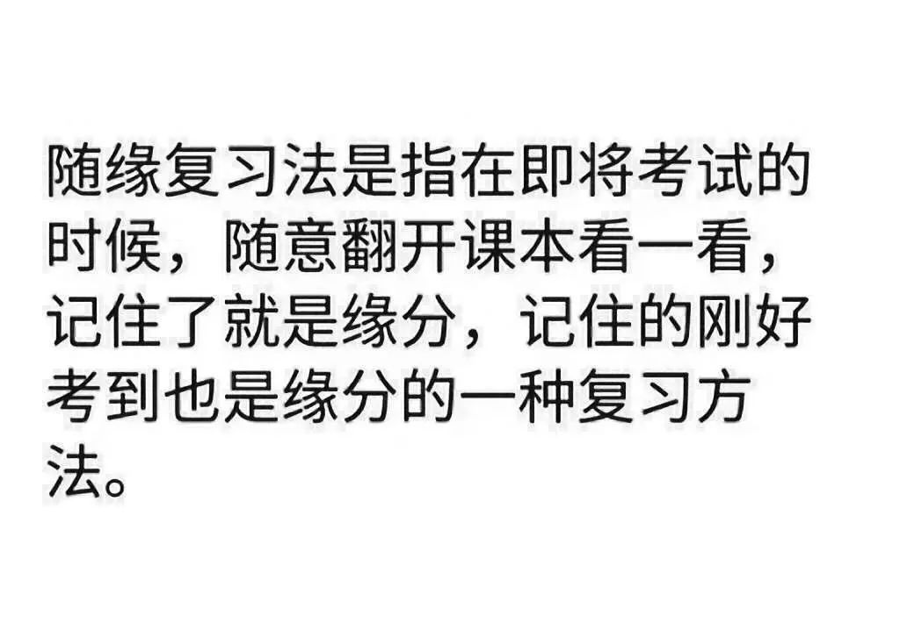
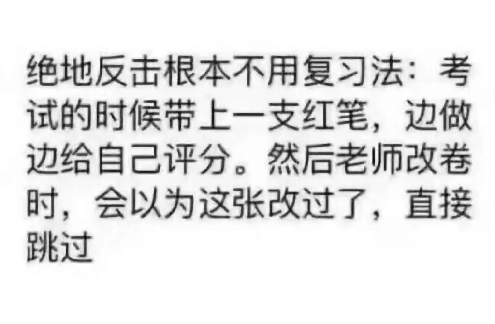
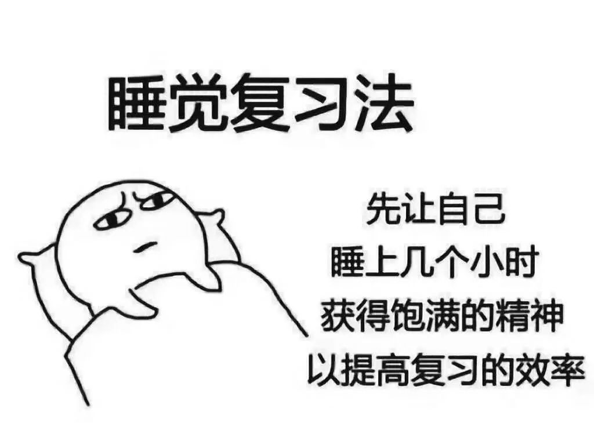
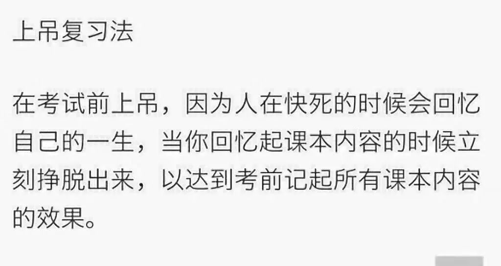

啦啦啦，各位宝宝即将经历大学的期末考试，想必会有些措手不及吧，被人形的各种器官支配，在医化的海洋里遨游，却上不去岸了。小编也是从大一过来了的，面对大二的期末考试，也是一筹莫展啊，不过还是和大家分享一些复习经验。




咳咳，不好意思放错图了，以上是小编的朋友圈内容，希望大家不要轻易尝试，下面才是正确复习方法。
首先，请大家一定要端正自己的态度。如果想要考一个不错的成绩回家过年，那么就一定要有一颗能静下来的心，不要觉得还有一个多月的时间，就不认真对待。然后我们再来谈谈怎么复习。
1
期末复习应该也可以说是温习一个学期学过的内容进行总结规范，掌握重点，熟悉理解次重点内容。期末复习应该先有学习计划，了解自己在那一个学科的薄弱，将时间合理分配到每一门学科，不偏科。如果老师有划重点，就一定要将所划的重点看懂，如果老师没有划，就划自己认为重要的地方，对某些不懂的地方再认真揣摩揣摩，弄明白每一个知识点。
2
在做好各门功课知识点的系统化梳理，按照书中章程仔细的记住每一个知识点，不遗漏。在做到加强的记忆训练牢牢地记住，做到举一反三，让每一个知识点所出现的题型都可以熟练的做出答案。自己平时的笔记也不能忘了，如果你的笔记是很全面，就一定要认真看完每一个字，同时划出精辟的知识点，最后的几天再将划的再看一遍。如果不怎么全面，就结合书本一起看。也可以向同学借课堂笔记，一定要结合自身情况安排复习工作。
3
如果自制力不好，那么就离开宿舍，去找一个安静的地方（图书馆或者各个教学楼的教室都是不错的选择）认真复习。再者，一定要远离你的手机。最好的当然是关机！或者也可以直接不带！不要找任何借口将手机拿在手上，一旦把手机拿在手上，接下来的什么都是浮云。
4
吃好、睡好、运动好、保持好心情。虽然复习很重要，但是大家一定要保证休息时间，不要熬夜，按时吃三餐，在时间和精力允许的情况下，可以适当地运动运动，保持良好的心态和规律的作息。
给自己列一份计划表吧！这个计划表可以把每一天的工作细化，同时催促自己完成计划。你也可以在每一天的工作后面写上一句话来总结一天工作效果或者感受。
想想考试之后，就放寒假了，可以回家吃好喝好睡好，也可以来一场想走就走的旅行，复习也变得没那么痛苦了是不是？大家一定要加油哦！下定决心开始复习之后，中间一定会有波折。不过，请记住一句话：优秀会成为一种习惯。坚持吧，慢慢地，你会开始习惯复习，有着自己的良好节奏，这时你会觉得，心里很踏实，全身都散发着一种叫做自信的光彩。
越是临近考试，内心就越要平静。
最后小编送给大家一个图。